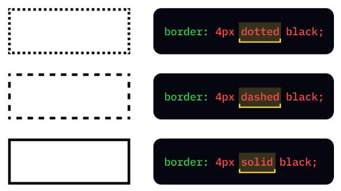

생활코딩: 박스모델
CSS Box Model
CSS에서는 디자인과 레이아웃을 말할 때 "박스 모델"이라는 용어가 사용됩니다.
CSS 박스 모델은 기본적으로 모든 HTML 요소를 둘러싸는 상자입니다.

display
- display:inline , display:block
border
content, padding, border, margin으로 각각 박스의 부피감을 결정하는 것이고 부피감을 결정한다는 것은
디자인에서 핵심적인 요소이며 굉장히 중요한 기능입니다.

속성 border를 통해 테두리를 시각적으로 설정할 수 있으며 요소의 크기를 볼 수 있습니다.
width, height
콘텐츠의 크기를 지정할 때는 가로 폭은 width, 높이는 height 값을 지정하면 된며, 화면 전체를 쓰는 block level element 특징을 바꾸고 싶다면 width 값으로 픽셀의 크기만큼 요소의 크기가 변경된다.